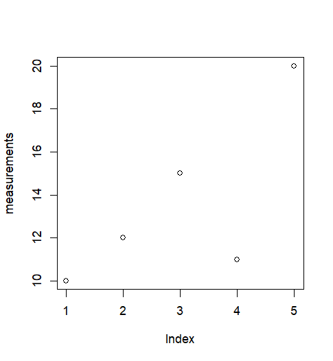
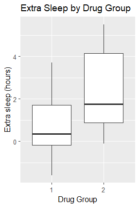
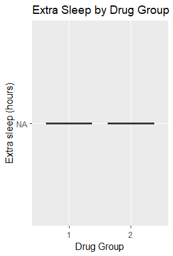

All in One View
Content from Introduction
Last updated on 2026-10-26 | Edit this page
Estimated time: 10 minutes
Overview
Questions
- What are R and RStudio, and how do they work together?
- Why use R for research and data analysis?
Objectives
- Distinguish between R and RStudio.
- Run simple R commands and scripts.
- Give overview of workshop contents.
R and RStudio
R is a programming language for data analysis, statistics, and visualisation. It allows you to automate analyses, create figures, and document your work so that others can reproduce your results.
RStudio is an integrated development environment (IDE) that makes working with R easier. It provides a code editor, console, file browser, and tools for viewing plots and managing projects.
Before continuing, make sure you have installed R and RStudio by following the Setup instructions.
RStudio
Throughout this workshop, we will use RStudio to write, run, and manage our R code. Although R can be used with other tools and editors, all demonstrations and exercises will use RStudio.
When you open RStudio, you will typically see:
- Console: Run R commands interactively.
- Source editor: Write and save reusable scripts.
- Environment: View objects created during your session.
- Files, Plots, and Help: Navigate files, inspect figures, and access documentation.
You can use the Console to try commands quickly, but saving your work in scripts makes it easier to reproduce and share.
Using the R Console in RStudio
Try running the following in the Console:
R
2 + 2
R can also store values in objects:
R
measurements <- c(10, 12, 15, 11, 20)
mean(measurements)
You can visualise these values:
R
plot(measurements)
This produces a scatter plot showing each measurement against its position in the vector:

R scripts
The Console is useful for exploring data and trying out commands, but commands entered there are not automatically saved for future use.
An R script is a plain-text file, usually with the
.R extension, that contains R code. Scripts allow you to
organise your analysis into a sequence of steps that can be saved,
rerun, and shared with others.
For example, we can combine our previous commands into a script:
R
# Create some example data
measurements <- c(10, 12, 15, 11, 20)
# Calculate the mean
print(mean(measurements))
# Visualise the measurements
plot(measurements)
In RStudio, you can create a script using File > New File
> R Script and save it as analysis.R.
You can run individual lines using Ctrl+Enter (Windows/Linux) or Cmd+Enter (macOS), or run the entire script using the Source button in the script editor.
Scripts are an important step towards reproducibility: instead of manually repeating commands, you can rerun the same analysis whenever your data changes. However, a script alone does not guarantee reproducibility.
It may still depend on external files, installed packages, or settings specific to your computer.
What will you learn in this workshop?
Throughout this workshop, we will improve this project step by step:
- Reproducibility: Understand why the analysis fails and what makes research reproducible.
-
Environments: Recreate the dependencies using
renvso the code runs. - Code quality: Identify “code smells” and opportunities for improvement.
- Testing: Check that changes do not break existing functionality.
- Refactoring: Make the code easier to read and maintain.
- Documentation: Help others understand and reuse the project.
- Packaging: Turn the workflow into a reusable R package.
This workshop will introduce good practices to help make your R code more reproducible, maintainable, and easier to share. The principles you learn can also be applied to projects beyond R.
Code of Conduct
We aim to provide a welcoming, inclusive, and supportive learning environment for everyone. Please have a look at our Code of Conduct, which outlines expectations for respectful behaviour and how to raise concerns during the workshop.
- R is a programming language and RStudio is an environment for working with R.
- Scripts make analyses easier to repeat, share, and maintain.
- Reproducibility also depends on managing packages and computing environments.
Content from Reproducibility
Last updated on 2026-10-26 | Edit this page
Estimated time: 40 minutes
Overview
Questions
- What does it mean for a workflow to be reproducible?
- What are the benefits of working reproducibly?
- Does reproducibility guarantee good research?
Objectives
- Explain what reproducibility is and how it fits alongside replicability, robustness, and generalisability.
- Describe the advantages of making your work reproducible and who benefits from those advantages.
- Be familiar with a set of best practices and tools (including version control, compute environment control, FAIR data, and clear documentation), that enable reproducible workflows.
A colleague’s R analysis
Before we work with real R code, let’s consider a hypothetical scenario.
Imagine a colleague has sent you their R script.
They ask you to reproduce their results while they are away.
You have the code. You know R.
It should be straightforward. Right?…
Why is the code not running?
You try to run an R script you received from a colleague. But it fails with and error or does not run at all.
Give three possible reasons.
These are some of the most common causes:
- Missing packages: The script may rely on packages that are not installed.
- Incorrect file paths: The script may use file paths that only exist on your colleague’s computer.
- Operating-system differences: An operating system, such as Windows, macOS or Linux, is the main software that manages your computer and runs programs such as R. We give an example in the How can the operating system matter? callout below.
- Documentation missing or unclear: If the script does not explain required inputs, expected file locations, or setup steps, you may not know how to run it correctly.
- Missing input: The script may expect other data files or inputs that were not shared with you.
If you are running the analysis on a different dataset, the script may fail because it expects specific column names, orders, or data types. This is actually a replicability issue rather than a reproducibility issue. We will cover that distinction later.
How can the operating system matter?
An operating system is the main software that manages your computer’s files, memory and hardware, and allows programs such as R to run. Windows, macOS and Linux are examples of operating systems.
The same R code can behave differently on different operating systems. So, your colleague’s script might run on their Linux computer but fail on your Windows computer because the two systems handle some tasks differently. The reverse can also happen.
For example, suppose a file in your working directory is called
Small-01.csv, but your code uses a lowercase
s:
R
read.csv("small-01.csv")
On your Windows computer, this code might work because filenames are usually matched regardless of capitalisation.
On your colleague’s Linux computer, it would usually fail because
small-01.csv does not match Small-01.csv.
Always match the filename exactly to avoid this problem:
R
read.csv("Small-01.csv")
What is reproducibility?
A workflow is reproducible when someone else can use the same data and same analysis to obtain the same results.
But having the code doesn’t guarantee this.
You also need the right data, software versions, and instructions.
Getting the script to run is only the first hurdle.
But what if it runs and the results are different?
Why did the results change?
Your colleague tells you which versions of packages to install and provides missing data files.
You run the script again and now it runs!
However… the results are different from your colleague’s.
Give three possible reasons for this reproducibility failure.
These are some of the most common causes:
-
Software version: R itself, or one or more packages
(e.g.
dplyrorggplot2), may be a different version on your machine than on your colleague’s. Even minor version updates can change default behaviour. - Data: The script may rely on a specific version of a dataset, but you might be using a different copy. Files may have been edited, rows removed, variables renamed, or missing values handled differently.
- Unclear documentation: If the workflow is poorly documented, you may unknowingly run steps differently — for example, using the wrong file, wrong parameters, or missing preprocessing steps.
- Manual steps that are not reproducible: If your colleague performed manual data cleaning, interactive filtering, or hand-edited files, those steps may not be captured in the script. As a result, your run will not match theirs.
-
Uncontrolled randomness: Many R functions use
randomness internally (e.g.
sample(), bootstrapping, cross-validation). If the script does not set a random seed usingset.seed(), each run can produce different results. Different machines may also use different random number generators or parallel backends, increasing variability. - Different computer setups: Windows, macOS and Linux can use different software to perform calculations, leading to small differences in results even with the same R code and package versions.
- Hidden state in the workspace: If the script is run in an R session that contains objects from previous work, those objects can interfere.
What makes a workflow reproducible?
So far, we’ve encountered two problems:
- The script did not run.
- The results did not match.
What could your colleague have done differently?
How can you increase reproducibility?
Name three tools or practices you can use to help others — and your future self — to reproduce your work.
Tools and Practices for Reproducibility
- Version control with Git captures the exact state of your project at any point in time. This ensures the code used for an analysis workflow is preserved and recoverable, even after changes have been made later.
-
Environment management with tools like
renvcapture software dependencies so others can recreate your computational environment. - Clear documentation including READMEs, comments, and usage instructions.
- Good data management practices like using consistent naming, metadata, and storing raw data separately from processed data.
- Publishing code, data, and notebooks in publicly accessible repositories increases transparency and allows others to easily access your work.
What about your future self?
Imagine returning to your own analysis a year later.
The code has changed. You’ve updated your packages.
Could you still reproduce your original results?
Reproducibility isn’t just about sharing research. It’s also about being able to return to it.
Why should research be reproducible?
Give three reasons to improve the reproducibility of the project.
Reproducibility is the essential first benchmark of trustworthy scientific research: without it, no further validation is possible.
Beyond the clear benefits for science, other reasons are:
- Helping your future self: A reproducible workflow saves time when revisiting or updating your project later. You avoid having to reconstruct your steps from memory.
- Collaboration: Transparent methods, shared code, use of established conventions, and clear documentation, all make it easier for others to understand, extend, and build on your work.
- Publishability: Journals and reviewers increasingly expect accessible data and transparent methods. Easily reproducible research is more credible and more likely to be accepted.
- Impact: Reproducible work is easier to reuse, cite, and adapt, increasing the reach and influence of your research.
Is reproducibility enough?
Back to our colleague’s analysis.
The script runs. The results match. Success!
But what if the original analysis contains a mistake?
We could reproduce that mistake too.
Reproducibility tells us whether we can obtain the same results, not whether those results are correct.
So, what else should we consider when assessing research?
Beyond reproducibility
Reproducibility is one way to assess research, but it is not the only one.
Explore The Turing Way’s guide to reproducibility.
Find out what replicability, robustness, and generalisability mean.
Then consider:
- How do replicability, robustness, and generalisability differ in terms of the data and analyses used?
- What does each help us assess about the research findings?
These concepts help us assess whether research findings hold under different conditions.
Replicability
Same analysis, different data.
Do we reach similar conclusions when we repeat the analysis using a new dataset?
Replicability helps us assess whether findings depend on the original data.
Robustness
Same data, different analysis.
Do we reach similar conclusions when we analyse the same data differently?
For example, we might use different statistical methods or preprocessing choices.
Robustness helps us assess whether findings depend on a particular analytical approach.
Generalisability
Different data, different analyses, or different conditions.
Do the findings hold beyond the original study?
Generalisability considers whether conclusions apply across the populations, settings, or conditions relevant to the research question.

The Turing Way Community. This illustration is created by Scriberia with The Turing Way community, used under a CC-BY 4.0 licence. DOI: 10.5281/zenodo.3332807
Good practices
Our hypothetical scenario has shown us why reproducibility matters: without it, we cannot easily check or build on research results.
But reproducibility alone is not enough. We also need code that is easy to understand, test, maintain, and reuse.
That’s where good coding practices come in.
Together, these practices help us produce more reliable, transparent, and reusable research.
What’s next?
We’ve explored these challenges through a hypothetical scenario.
Now let’s see what happens with real R code.
In the next episode, Environments, we’ll work with
our colleague’s script, investigate why it fails, and learn how to
manage package dependencies using renv.
- Reproducibility: Same data and analysis, same results.
- Reproducible does not necessarily mean correct.
- Replicability, robustness, and generalisability help us assess findings beyond the original analysis.
- Good coding practices make research easier to check, maintain, and reuse.
Content from Environments
Last updated on 2026-10-26 | Edit this page
Estimated time: 105 minutes
Overview
Questions
- What is a project environment and why does it matter?
- How can we create a project environment?
Objectives
- Explain the purpose of an project environment.
- Create a project environment using
renv. - Use use
renv::snapshot()to take implicit and explicit snapshots of the environment. - Restore an environment using a lockfile or using a
DESCRIPTIONfile.
Running someone else’s script
A colleague emails you an R script called sleep_analysis.R and asks you to reproduce their results while they are away.
Before running anything, create an R project to organise your work.
Create an R project
Create a folder called rworkshop in your home directory
to hold your workshop files. Then create an R project inside it using
RStudio:
- Go to File > New Project > New Directory > New Project
- Name the directory
sleep - Create it as a subdirectory of
rworkshop(for example:C:/Users/username/rworkshop/) - Leave the other settings at their defaults, with options such as Create a git repository and Use renv with this project unticked
- Click Create Project
To return to your work later, open sleep.Rproj in the
sleep folder. Double‑clicking this file launches RStudio,
sets the working directory, and restores your project as you left
it.
Save the script
Download sleep_analysis.R and
save it in the sleep folder. Open it in RStudio to view the
code your colleague sent you:
R
library(obscurepackage)
library(ggplot2)
data <- sleep
none_transformed_data <- none_transform(data$extra)
p <- ggplot(data, aes(x = group, y = none_transformed_data)) +
geom_boxplot() +
labs(
title = "Extra Sleep by Drug Group",
x = "Drug Group",
y = "Extra sleep (hours)"
)
print(p)
Run the script
Run sleep_analysis.R to see what happens.
In RStudio, you can run the script using your editor’s Source button.
You will probably hit an error resulting in a message that looks like the one below.
The script tries to load:
R
library(obscurepackage)
On your machine, R looks for packages in its configured R libraries.
You might already have ggplot2 installed, but you probably
do not have obscurepackage installed, so the script
fails.
Install the required packages
You may already have ggplot2 installed, but if not, you
can install it with:
R
install.packages("ggplot2")
R downloads and installs ggplot2 and any required
dependencies. You should see installation progress in the console,
followed by the return of the > prompt. Check for errors
before continuing.
The obscurepackage is not on CRAN.
First, install the remotes package, which allows you to install packages from GitHub:
R
install.packages("remotes")
R downloads and installs remotes. Wait for installation
to finish and check for errors before continuing.
Then, install obscurepackage:
R
remotes::install_github("stellaprins/obscurepackage")
Reproduce the results
Now that you have installed the required packages, are you able to reproduce the plot below?
If not, what happens, and why do you think the results differ?
Hint: visit the obscurepackage
GitHub repository and explore its commit history. Have any changes
been made that could explain the difference?

You will not be able to reproduce your colleague’s original plot
using the latest version of obscurepackage.
Instead, you should see something like this:

The difference is caused by a bug introduced in a newer version of
obscurepackage.
The none_transform() function was originally designed to
return its input unchanged:
R
none_transform <- function(x) {
return(x)
}
However, a bug introduced in the newer version causes the function to
always return NA, regardless of its input:
R
none_transform <- function(x) {
return(NA)
}
As a result, the analysis produces missing values instead of the expected data, preventing the original boxplot from being reproduced.
To reproduce your colleague’s results, you would need to install an
earlier version of obscurepackage that does not contain the
bug.
Changes to software dependencies can affect reproducibility, even when the code and data remain unchanged. This highlights the importance of recording and managing package versions.
Project environments
Different versions of an R package can behave differently.
This can be due to new features, altered defaults, or bugs, and causes the same code to produce different results.
A version mismatch happens when your script relies on a package whose behaviour has changed between releases.
A project environment helps prevent this by isolating the packages your project uses and recording their versions.
This keeps your work separate from whatever happens to be installed globally on your system and avoids conflicts between R projects that require different or incompatible dependencies.
Recording package versions in a project environment also helps you rebuild the setup, for example when someone else needs to run your analysis or you return to the project in the future.
Two different meanings of environment in R
1) project environments
These are project‑specific libraries created by the renv
package. They store packages and their versions, helping you reproduce
your project on other machines.
2) R environments
These store variables and track where functions were created, and
control how R finds values. They enable features like lexical scoping
and namespaces.
In this workshop, we are going to use an R package called
renv to manage our project environment.
To install renv:
R
install.packages("renv")
R downloads and installs renv. Wait for installation to
finish and check for errors before continuing.
Find out more about renv
Open the renv help page in the R console:
R
?renv
Explore the help page and useful links.
In your own words, explain:
- What does
renvdo? - How can
renvhelp when handing the project over to a colleague?
renv is an R package that helps create reproducible
environments.
renv gives every R project its own library of packages,
separate from everything else on your computer, and records the package
versions the project uses.
When you hand a project to someone else, renv can
restore the package versions recorded in renv.lock.
This helps them recreate your project environment and run the analysis using the same package versions.
Differences in R versions, operating systems, or system libraries can still affect the results.
Initialise renv:
R
renv::init()
This will:
- Set up project infrastructure inside your working directory that
ensures
renvwill be used in future sessions - Discover packages used in your project and add them and their dependencies to the project library
- Create a “lockfile” named
renv.lockthat records the versions of your project’s package dependencies - Restart R if you are using RStudio.
Install packages in the project environment
Before using renv, we installed packages using
install.packages(). Packages are installed into an R
library, which may be shared by several projects. When renv
is active, install.packages() normally uses the project
library.
This installs ggplot2 only into the project’s
renv library, leaving the global library untouched:
R
renv::install("ggplot2")
Install a GitHub package
Use the help page for renv::install to learn how to
install packages inside the renv environment.
R
?renv::install
- Use the help page to find out how to install a package from GitHub
using
renv::install() - Use what you learned to install
v0.1.0of the GitHub repositorystellaprins/obscurepackage.
Hint: Explore the repository’s commit history to
find the commit corresponding to v0.1.0, and check how to
specify a commit hash when using renv::install().
From the help page, GitHub packages can be installed by using the
username/repository string, and specific versions can be
installed by supplying a commit SHA.
The commit SHA for v0.1.0 of
stellaprins/obscurepackage is 9e7cfcba9bfbfd1cbea4dbc1600f8d5283c71831.
R
renv::install("stellaprins/obscurepackage@9e7cfcba9bfbfd1cbea4dbc1600f8d5283c71831")
To install a specific version of a GitHub package inside a
renv project, use the username/repo@version
format:
R
renv::install("stellaprins/obscurepackage@v0.1.0")
Restart your R session to make sure R uses the newly installed
version of obscurepackage.
In RStudio, select Session > Restart R, or run:
R
.rs.restartR()
Note: .rs.restartR() only works in
RStudio, not in a standard R terminal or other R editors.
Then run sleep_analysis.R again.
You should be able to replicate the results of your colleague!
Recording your environment with a lockfile
You have now reproduced your colleague’s results by installing a
specific version of obscurepackage.
But how can you make sure that you, or someone else, can reproduce these results again in the future?
This is where a lockfile comes in.
When you initialise renv, it creates a file called
renv.lock.
This file records information about your project’s software dependencies, including:
- The R version used by the project
- The packages required by the project
- The exact versions of those packages
- Where the packages were installed from, such as CRAN or GitHub
Now that you have installed a different version of
obscurepackage, your project environment has changed.
These changes are not automatically recorded in your
renv.lock file.
To check whether your project environment is consistent with your lockfile, use:
R
renv::status()
renv::status() compares three things:
-
renvproject library - the
renv.lockfile - What your project actually uses
If these differ, renv::status() will report
inconsistencies such as:
- packages installed but not recorded
- packages recorded but not installed
- packages where the installed version ≠ recorded version
Once you have reviewed these differences, you can use
renv::snapshot() to update the lockfile and record the
current state of your project environment.
Update your lockfile using a snapshot
Run:
R
renv::status()
Look at the output.
Now take a snapshot using renv::snapshot():
R
renv::snapshot()
Then, run renv::status() again:
R
renv::status()
Compare the renv::status outputs before and after taking
a snapshot:
- Which inconsistencies disappeared?
- Which (if any) remain?
- Why did snapshotting fix these issues?
After taking the snapshot, renv::status() may
report:
renv::snapshot() updates the lockfile to record the
installed versions of your project’s dependencies and the R version.
This can resolve inconsistencies between the lockfile and the project
library. However, it does not install missing packages. Some issues may
still require renv::install() or
renv::restore().
Use renv::snapshot() to record your project’s current
package dependencies and their versions in the lockfile.
R
renv::snapshot()
Restoring an environment from a lockfile
While renv::snapshot() records your current environment,
renv::restore() recreates the environment described by the
lockfile.
| Command | Purpose |
|---|---|
renv::status() |
Check whether the project environment and lockfile are consistent |
renv::snapshot() |
Record the current environment in the lockfile |
renv::restore() |
Recreate the environment described by the lockfile |
Use renv::restore() when:
- You open a project on a new computer
- You clone someone else’s project from GitHub
- You want to return to a known working state
DESCRIPTION files
You receive an email from your colleague. Apparently the earlier file
(sleep_analysis.R) was the wrong one.
This time, your colleague sent you two files: sleep_analysis_final.R and DESCRIPTION.
In their message, your colleague explains that you should use the
DESCRIPTION file to create the correct R environment for
running the analysis.
Continue in the same sleep project. Download the DESCRIPTION file and save it
in rworkshop/sleep.
Download sleep_analysis_final.R and save it in the same folder. Its contents are shown below.
R
library(dplyr)
library(ggplot2)
library(broom)
data <- sleep
# Compute group means for bar plot
summary_tbl <- data |>
group_by(group) |>
summarise(
mean_extra = mean(extra),
sd_extra = sd(extra),
n = n(),
se_extra = sd_extra / sqrt(n)
)
# Compute prolongation (drug - placebo) per subject
sleep1 <- data |>
group_by(ID) |>
summarise(
prolongation = extra[group == 2] - extra[group == 1]
)
# Paired t-test
tt <- t.test(sleep1$prolongation, mu = 0)
tt_tidy <- tidy(tt)
p_value <- signif(tt_tidy$p.value, 3)
t_stat <- signif(tt_tidy$statistic, 3)
# Bar plot with t-test annotation
ggplot(summary_tbl, aes(x = factor(group), y = mean_extra)) +
geom_col(fill = "steelblue", alpha = 0.8, width = 0.6) +
geom_errorbar(aes(ymin = mean_extra - se_extra,
ymax = mean_extra + se_extra),
width = 0.2, linewidth = 0.8) +
labs(
title = "Extra Sleep by Drug",
x = "Drug",
y = "Extra Sleep (hours)"
) +
annotate(
"text",
x = 1.5,
y = max(summary_tbl$mean_extra) + 1,
label = paste0("t = ", t_stat, "\n",
"p = ", p_value),
size = 5,
hjust = 0.5
) +
theme_minimal(base_size = 14)
Keep your original sleep_analysis.R file. We will
compare the dependencies detected in both scripts later.
Your workshop folder should now include these files:
rworkshop/
└── sleep/
├── sleep.Rproj
├── sleep_analysis.R
├── sleep_analysis_final.R
├── DESCRIPTION
├── renv.lock
├── .Rprofile
└── renv/Learn more about DESCRIPTION
files
Open the DESCRIPTION file in RStudio. What information
does the file contain?
The DESCRIPTION file contains information about the
project, including its name, version, a short description, and the
packages it depends on.
R
Package: sleepanalysis
Title: Sleep Analysis
Version: 0.1.0
Description: Dependencies for the sleep analysis.
Imports:
dplyr (>= 1.1.0),
tidyr (>= 1.3.0),
ggplot2 (>= 3.4.0),
broom (>= 0.8.0)
The Imports field lists the packages required by the
project and their minimum versions.
The >= operator means greater than or equal to, so
the specified version or any newer version can be installed.
For example, dplyr (>= 1.1.0) means that version 1.1.0 or any newer version can be used.
A DESCRIPTION file is normally used in R packages to
record information such as the package name, version, authors, and
dependencies.
Here, we use it to declare dependencies for our analysis project.
This does not turn the project into an R package. In this case, a
minimal DESCRIPTION file containing only an
Imports field is sufficient to declare the project’s
dependencies for use with renv.
Why specify minimum package versions?
In DESCRIPTION files, it is common to use
>= to specify the minimum required version of each
package. This means that the specified version or any newer version can
be installed.
Discuss the following questions: 1. What are the benefits of allowing newer package versions? 2. What potential pitfalls could this introduce?
Think back to your earlier experience with
obscurepackage.
Specifying minimum versions provides flexibility, allowing projects to benefit from bug fixes, security updates, and new features without constantly updating dependency requirements.
However, newer versions can also introduce breaking changes, alter
default behaviour, or contain bugs, as you saw with
obscurepackage.
Therefore, specifying minimum versions alone does not guarantee reproducibility.
While DESCRIPTION defines the project’s dependency
requirements, renv.lock records the exact package versions
used in a particular environment.
Reset the environment
We will start with an empty package environment in the same
sleep project to see which packages
DESCRIPTION provides. This resets the project’s package
library and lockfile, while keeping your scripts and
DESCRIPTION file. Clearing objects from RStudio’s
Environment pane does not reset installed packages.
Make sure the sleep project is open, then select
Session > Restart R to unload packages.
Remove the packages used in the first exercise from the active library:
R
renv::remove(c("ggplot2", "obscurepackage"))
Remove the existing renv infrastructure, including the
project library and lockfile:
R
renv::deactivate(clean = TRUE)
After R restarts, initialise an empty project environment:
R
renv::init(bare = TRUE)
The bare = TRUE argument skips dependency discovery and
installation.
If prompted to choose how dependencies are discovered, select Use only the DESCRIPTION file (explicit mode). We will explore snapshots in more detail later in this lesson.
Try running sleep_analysis_final.R. It should fail
because its required packages are not yet installed in the project
library. Next, you will identify and install them.
Find dependencies in a project
Before installing anything, it is useful to check which dependencies
renv detects.
renv::dependencies() scans your project files and
reports every package it finds, along with where each one came from.
R
renv::dependencies()
renv::dependencies()
Run renv::dependencies():
R
renv::dependencies()
Examine at the Package, Source, and
Type columns.
- Which packages does
renvdetect? - Which files are these packages found in?
- Are all the detected packages listed in
DESCRIPTION?
Your output may look similar to this (file paths will vary):
Finding R package dependencies ... Done!
Type Source Package Require Version Dev
1 Imports C:/Users/username/rworkshop/sleep/DESCRIPTION dplyr >= 1.1.0 FALSE
2 Imports C:/Users/username/rworkshop/sleep/DESCRIPTION tidyr >= 1.3.0 FALSE
3 Imports C:/Users/username/rworkshop/sleep/DESCRIPTION ggplot2 >= 3.4.0 FALSE
4 Imports C:/Users/username/rworkshop/sleep/DESCRIPTION broom >= 0.8.0 FALSE
5 <NA> C:/Users/username/rworkshop/sleep/sleep_analysis.R ggplot2 FALSE
6 <NA> C:/Users/username/rworkshop/sleep/sleep_analysis.R obscurepackage FALSE
7 <NA> C:/Users/username/rworkshop/sleep/sleep_analysis_final.R broom FALSE
8 <NA> C:/Users/username/rworkshop/sleep/sleep_analysis_final.R dplyr FALSE
9 <NA> C:/Users/username/rworkshop/sleep/sleep_analysis_final.R ggplot2 FALSEWhich packages does renv detect?
renv detects five different packages:
dplyr, tidyr, ggplot2,
broom, and obscurepackage.
Some packages appear more than once because they are found in multiple files.
Which files are these packages found in?
The Source column shows where each package was
found:
-
DESCRIPTIONlistsdplyr,tidyr,ggplot2, andbroom. -
sleep_analysis.Rusesggplot2andobscurepackage. -
sleep_analysis_final.Rusesdplyr,ggplot2, andbroom.
The Type column shows Imports for packages
declared in the Imports field of DESCRIPTION.
For packages detected in the R scripts, it shows
<NA>.
Are all the detected packages listed in
DESCRIPTION?
No. There are two differences:
-
obscurepackageis used insleep_analysis.Rbut is not listed inDESCRIPTION. -
tidyris listed inDESCRIPTIONbut is not used in either R script.
This shows that the packages declared in DESCRIPTION do
not always match those used in the project’s scripts.
Install dependencies from DESCRIPTION file
To install the packages listed in DESCRIPTION, we can use the remotes package.
First, install remotes if you haven’t already:
R
install.packages("remotes")
Then run:
R
remotes::install_deps()
This installs the packages listed in the DESCRIPTION
file and their dependencies.
Run both analysis scripts
Now that you have installed the dependencies from
DESCRIPTION, try running both sleep_analysis.R
and sleep_analysis_final.R.
Do both scripts run successfully? Why does one script fail?
sleep_analysis_final.R should run successfully.
This script uses dplyr, ggplot2, and
broom, which are all listed in DESCRIPTION and
have now been installed.
sleep_analysis.R should fail because it requires
obscurepackage. That package is not listed in
DESCRIPTION, so it was not installed. The declared
dependencies support the final analysis, but not the original
script.
The sleep_analysis_final.R script should now run without
errors, because every required package is available inside the
renv project library.
The DESCRIPTION file usually specifies minimum required
versions, not exact pins.
This flexibility allows newer versions to be installed so your project can benefit from bug fixes, performance improvements, and security updates.
In contrast, the lockfile records the exact package versions used in a specific environment.
This means your colleague’s lockfile may differ from yours even if
you share the same DESCRIPTION file.
Choosing which dependencies to record
Earlier, you used renv::snapshot() to record your
project’s package versions in a lockfile.
But remember what you found when running
renv::dependencies()? Your original
sleep_analysis.R script uses obscurepackage,
even though it isn’t listed in DESCRIPTION or needed for
the final analysis.
When taking a snapshot, we can choose how renv
identifies which packages to record.
Snapshot types
Use the help system to find out what snapshot types are available and how they differ:
R
?renv::snapshot
- What is the default snapshot type?
- How do implicit and explicit snapshots differ?
- Why is an explicit snapshot the better choice in this situation?
The default is implicit, but
renv::snapshot() uses the project’s saved setting. Our
project uses explicit because we selected that setting
after resetting the environment.
- An implicit snapshot records installed packages
detected by
renv::dependencies()in project files and their dependencies. - An explicit snapshot records installed packages
declared in the
ImportsorDependsfields ofDESCRIPTIONand their dependencies.
Both approaches record the installed versions of the selected packages and their dependencies in the lockfile.
In our project, an implicit snapshot would identify
obscurepackage because it is used in the original
script.
An explicit snapshot instead uses the dependencies
declared in DESCRIPTION, including tidyr, even
though it is not used directly in either script.
Since our colleague has provided a DESCRIPTION file
listing the packages needed for the final analysis,
explicit snapshotting is the better choice here.
Check the project’s snapshot type:
R
renv::settings$snapshot.type()
The result should be "explicit". Take a snapshot using
this setting:
R
renv::snapshot()
You can also specify the type for an individual snapshot:
R
renv::snapshot(type = "explicit")
Both commands use explicit mode here. Supplying type
overrides the saved setting for that call only.
Check that the project is now consistent:
R
renv::status()
You should see a message indicating that there are no issues.
Your lockfile now records the dependencies for the final analysis.
obscurepackage is neither installed nor recorded in the
lockfile.
Restore an environment using its lockfile
Now that you have recorded a working environment in your lockfile, let’s see how you can use it to recover a missing package.
1. Remove a package
Select Session > Restart R to unload packages,
then remove broom from your project library:
R
renv::remove("broom")
2. Run your analysis
Run sleep_analysis_final.R again and examine the error
message.
Why does the script no longer work?
3. Restore your environment
Think back to Restoring an
environment from a lockfile, where you learned about
renv::snapshot() and renv::restore().
- Which function would you use to recover the missing package:
snapshot()orrestore()? - Try running the function you think is appropriate.
- Run
sleep_analysis_final.Ragain. Does it work now? - Why did your chosen function work (or not work)?
The script initially fails because broom has been
removed from the project library, so R can no longer find the package it
needs.
The correct function to use is:
R
renv::restore()
This tells renv to compare the packages installed in
your project with those recorded in renv.lock. Because
broom is recorded in the lockfile but is no longer
installed, renv identifies the missing package and
reinstalls the recorded version.
After restoring the environment, sleep_analysis_final.R
should run successfully again.
Why does restore() work, but
snapshot() does not?
The two functions serve different purposes:
-
renv::snapshot()records the current state of your project’s package dependencies inrenv.lock. -
renv::restore()uses the lockfile to recreate the recorded package environment.
In this exercise, the lockfile already describes a working environment. We want to recover that environment, not record its current, incomplete state.
- Package versions can affect results, even when code and data stay the same.
-
renvcreates an isolated package library for each project. -
DESCRIPTIONdeclares required packages, andrenv.lockrecords exact versions. - Use
renv::snapshot()to record installed versions andrenv::restore()to recreate the recorded package environment.
Content from Code smells
Last updated on 2026-10-26 | Edit this page
Estimated time: 40 minutes
Overview
Questions
- How can you recognise potential problems in a script before fully understanding what it does?
Objectives
- Explain what code smells are and why identifying them is useful when exploring unfamiliar code.
- Explain how code smells can affect readability, maintainability, correctness, and reproducibility.
- Identify code smells in R scripts and be familiar with better approaches.
Sniffing for code smells
We have managed to get our colleague’s R workflow running and reproduce the results.
But now that we start reading the code more closely, some parts are difficult to understand.
We want to improve the code, but we don’t want to break the workflow.
Before changing anything, let’s sniff out code smells.
A code smell is a warning sign that some part of the code might be difficult to understand, maintain, or change.
Code smells are not necessarily bugs.
A script can run correctly and produce the expected results while still containing code smells.
However, smells can make it harder to:
- Understand what the code does.
- Find and fix mistakes.
- Make changes without introducing new problems.
- Reuse or maintain the analysis in the future.
We can often spot code smells without understanding the full logic of the code.
This makes looking for smells a useful first step when exploring an unfamiliar codebase.
Let’s look at some examples of common code smells.
Duplicated code
Duplicated code occurs when the same or very similar operations appear in multiple places.
This can cause different kinds of problems.
Example
Repeating a data transformation
R
sleep$extra <- sleep$extra * 2
# Later in the script
sleep$extra <- sleep$extra * 2
The first operation multiplies the values by 2.
The second operation acts on the already modified values, multiplying them by 2 again.
As a result, the original values are multiplied by 4 instead of 2.
If the second operation is accidental, the analysis will produce incorrect results, even though the code runs without errors.
WET code
Duplicated code is also associated with WET code, an informal term sometimes expanded as Write Everything Twice.
WET code repeats similar calculations or logic in different places.
For example:
R
# WET code
group1_mean <- mean(sleep$extra[sleep$group == 1])
group2_mean <- mean(sleep$extra[sleep$group == 2])
group1_sd <- sd(sleep$extra[sleep$group == 1])
group2_sd <- sd(sleep$extra[sleep$group == 2])
Here, the same calculations are written separately for each group.
Why is this a problem?
Repeated operations that modify data can accidentally apply the same transformation more than once.
Imagine we decide to handle missing values using
na.rm = TRUE.
We would need to update all four calculations.
If we forget one, the groups might be analysed differently, producing inconsistent results.
As the analysis grows, maintaining repeated calculations becomes increasingly difficult.
When the same logic appears in several places, a change must be made consistently everywhere.
A better approach
An alternative is the DRY principle, which stands for Don’t Repeat Yourself.
DRY encourages us to avoid unnecessary duplication by expressing shared logic in one place.
For example, we can calculate the same statistics for both groups
using dplyr:
R
# DRY code
sleep |>
dplyr::group_by(group) |>
dplyr::summarise(
mean_extra = mean(extra),
sd_extra = sd(extra),
.groups = "drop"
)
Here, we define each calculation once.
R then applies those calculations to each group.
If we want to change how the mean is calculated, we only need to update one line.
How do WET and DRY differ?
| WET code | DRY code |
|---|---|
| Repeats similar calculations | Defines shared calculations once |
| Changes may be needed in several places | Changes can often be made in one place |
| Greater risk of inconsistent updates | Lower risk of inconsistent updates |
| Can become difficult to maintain as the analysis grows | Often easier to maintain and extend |
The goal of DRY is to avoid unnecessary duplication, not to make code shorter at the expense of readability.
Hardcoded paths
A hardcoded path is a file location written directly into the code.
Example
R
sleep_data <- read.csv(
"/home/colleague/research/sleep/data/sleep.csv"
)
This code assumes that the data file is stored in a specific location on our colleague’s computer.
Why is this a problem?
The script might work perfectly for our colleague but fail when we run it on another computer.
Even if we have the same data, our files might be stored in a different directory.
This makes the workflow harder to share, reuse, and reproduce.
A better approach
Use a path relative to the project directory:
R
sleep_data <- read.csv(
"data/sleep.csv"
)
Here, the path refers to a file inside the project’s
data directory.
If we share the complete project and run the code from its root directory, the same path can work on another computer.
How do they differ?
| Hardcoded absolute path | Project-relative path |
|---|---|
| Refers to a specific location on a computer | Refers to a location within the project |
| May fail on another computer | More portable when the project structure is preserved |
Tools such as rrtools
and usethis can
help create projects with a consistent structure, similar to how
Cookiecutter templates are used in Python.
Following shared conventions makes it easier for collaborators to find files, understand the workflow and reproduce the analysis.
What matters most is that the structure is consistent, documented and understood by everyone working on the project.
What to look for
Absolute file paths, personal directories, or file locations that only exist on one computer.
symlinks
Sensitive data may need to remain on secure shared drives, meaning absolute file paths are sometimes necessary instead of relative paths.
One possible workaround is to use symbolic links (symlinks), which allow you to access data stored outside your project using relative paths. The linked Wikipedia page explains how to create symbolic links on different operating systems. Creating them may require additional permissions, particularly on managed Windows computers.
Magic numbers
A magic number is a numerical value used in code without a clear explanation of its meaning.
Example
R
sleep$category <- ifelse(
sleep$extra > 2.5,
"high",
"low"
)
Why is the threshold 2.5?
Does it come from a scientific paper, a previous analysis, or an arbitrary decision?
Why is this a problem?
Someone reading the code may not understand why the value was chosen.
If the threshold is used in several places, changing it could also lead to inconsistencies.
A better approach
Give the value a meaningful name:
R
high_response_threshold <- 2.5
sleep$category <- ifelse(
sleep$extra > high_response_threshold,
"high",
"low"
)
Now the purpose of the number is easier to understand.
However, a meaningful name does not explain why the threshold was chosen. We may still need documentation or a reference to justify it.
Commented-out code
Commented-out code is code that has been disabled by turning it into a comment.
Example
R
# sleep$category <- ifelse(sleep$extra > 1, "high", "low")
# sleep$category <- ifelse(sleep$extra > 2, "high", "low")
sleep$category <- ifelse(sleep$extra > 2.5, "high", "low")
R ignores lines beginning with #, so only the
last calculation runs.
Why is this a problem?
Our colleague has left three versions of the same calculation in the script, each using a different threshold.
But which threshold is correct? Why did it change from 1
to 2, and then to 2.5?
Without an explanation, we cannot tell whether these changes were intentional or whether the older calculations are still relevant.
Commented-out code can make it difficult to identify which parts of an analysis are current and trustworthy.
A better approach
Comments are useful when they explain why something is done, rather than preserving old calculations.
For example:
R
# Classify responses using the threshold reported in
# Author et al. (2024), https://doi.org/XX.XXXX/XXXXX
high_response_threshold <- 2.5
sleep$category <- ifelse(
sleep$extra > high_response_threshold,
"high",
"low"
)
This comment provides context rather than preserving an unused calculation.
Comments are not code smells themselves. The problem is leaving obsolete or unexplained code in comments.
Lack of modularity
Lack of modularity occurs when different tasks are combined into one large block of code or function, rather than organised into smaller, independent parts.
Example
For example, our colleague has written a function to analyse the sleep data:
R
analyse_sleep <- function(data) {
# Clean the data
data <- data[!is.na(data$extra), ]
data$group <- factor(data$group)
# Calculate summary statistics
summary <- aggregate(
extra ~ group,
data = data,
FUN = mean
)
names(summary)[2] <- "mean_extra"
# Create a plot
plot <- ggplot2::ggplot(
summary,
ggplot2::aes(x = group, y = mean_extra)
) +
ggplot2::geom_col() +
ggplot2::labs(
x = "Treatment group",
y = "Mean change in sleep"
)
# Save the results
write.csv(
summary,
"results/sleep_summary.csv",
row.names = FALSE
)
ggplot2::ggsave(
"results/sleep_plot.png",
plot = plot
)
return(summary)
}
This function performs several different tasks:
- Cleans and prepares the data.
- Calculates summary statistics.
- Creates a plot.
- Saves the results to files.
Why is this a problem?
Imagine we only want to change the appearance of the plot.
We would still need to work inside a function that cleans the data, calculates statistics and saves files. Running the function would repeat all these steps, even though we are only interested in the plot.
Combining different tasks in one function makes it harder to understand, test and modify them independently. Changes to one part of the workflow may also affect others.
A better approach
Modular code is organised into small, self-contained parts, each with a clear purpose.
For example, we could divide our colleague’s workflow into separate functions:
R
clean_sleep_data()
summarise_sleep()
plot_sleep_results()
save_sleep_results()
Each function would be responsible for a particular task. This would make it easier to understand the workflow, test individual steps and change one part without unnecessarily affecting others.
A long function is not necessarily a problem. What matters is whether its responsibilities are clear and whether its parts are easy to understand, test and change.
Lack of tests
Automated tests check whether code behaves as expected. They help us catch mistakes when changing or extending an analysis.
Example
R projects using testthat commonly
organise their tests as follows:
project/
├── R/
│ └── functions.R
└── tests/
└── testthat/
└── test-functions.RThe tests/testthat/ directory is the standard convention
for R packages using testthat, although other projects may
organise tests differently.
Why is this a problem?
Without tests, we have less confidence that the code works correctly or that changes will preserve its behaviour.
A better approach
Use automated tests to check expected results and identify code that has not been tested.
Test coverage measures how much of our code is executed when automated tests run.
In R, the covr
package can help identify which parts of the code are covered by tests
and which are not.
However, high test coverage does not guarantee correctness. Tests also need to check that the code produces the expected results.
The absence of tests does not mean the code is incorrect, but it makes changes riskier.
Lack of function documentation
Lack of function documentation is a code smell. A function may work correctly but still be difficult to use if its purpose, inputs and outputs are unclear.
Example
R
calculate_response <- function(data, threshold = 2.5) {
mean(data$extra > threshold, na.rm = TRUE)
}
A better approach
In R, functions can be documented using roxygen2,
which uses comments beginning with #':
R
#' Calculate the proportion of high sleep responses
#'
#' @param data A data frame containing an `extra` column.
#' @param threshold The value above which a response is high.
#'
#' @return The proportion of non-missing observations
#' exceeding the threshold.
calculate_response <- function(data, threshold = 2.5) {
mean(data$extra > threshold, na.rm = TRUE)
}
The roxygen2 package can use them to generate R help
files.
Unexplained code
Sometimes code performs an unusual operation without explaining why.
Overcommenting
Overcommenting occurs when comments repeat obvious operations rather than adding useful information.
Example
R
# Get the extra column
extra <- sleep$extra
# Remove missing values
extra <- extra[!is.na(extra)]
# Calculate the mean
mean_extra <- mean(extra)
# Print the result
print(mean_extra)
Why is this a problem?
These comments make the code longer without helping us understand it.
Excessive comments also require maintenance. If the code changes but the comments do not, they may become misleading.
Exercises: Can you smell something?
Our colleague has shared some additional R code from different research projects.
Look at each example and identify the code smells.
You do not need to run, understand every calculation, or fix the code.
There may be more than one smell in each example.
Exercise 1: Survey responses
R
# Read in survey results
survey <- read.csv("data/survey.csv")
# Previous approach
# get selection
# survey$age_group <- ifelse(survey$age > 30, "older", "younger")
# get selection
survey$age_group <- ifelse(survey$age > 35, "older", "younger")
# Calculate the mean score for female respondents
female_mean <- mean(survey$score[survey$gender == "female"])
# Calculate the mean score for male respondents
male_mean <- mean(survey$score[survey$gender == "male"])
Which code smells can you identify?
-
Magic number: The age threshold
35is unexplained. - Commented-out code: An earlier age classification remains in the script.
- Duplicated code: The mean score is calculated separately for each group.
- Overcommenting: The comments above the mean calculations simply repeat what the code already says.
Exercise 2: Temperature analysis
R
analyse_temperature <- function() {
temperature <- read.csv(
"C:/Users/researcher/Documents/weather/temperature.csv"
)
temperature <- na.omit(temperature)
average <- mean(temperature$value)
hist(temperature$value)
write.csv(
data.frame(average = average),
"C:/Users/researcher/Desktop/average.csv"
)
return(average)
}
Which code smells can you identify?
- Hardcoded paths: The input and output locations are specific to the researcher’s computer.
- Lack of modularity: The function loads data, removes missing values, calculates a statistic, creates a plot and saves results.
- Lack of function documentation: The function does not explain what temperature measurements it expects, their units or what the returned average represents.
Exercise 3: Laboratory measurements
R
control <- measurements[measurements$treatment == "control", ]
treated <- measurements[measurements$treatment == "treated", ]
control$adjusted <- control$value * correction_factor
treated$adjusted <- treated$value * correction_factor
# Remove sample 42
treated <- treated[treated$sample_id != 42, ]
# Calculate the mean
treated_mean <- mean(treated$adjusted)
Which code smells can you identify?
- Duplicated code: The same adjustment is performed separately for the control and treated groups.
-
Unexplained code: Sample
42is excluded without explaining why. The comment describes the operation but not the reason. -
Overcommenting: The comment
# Calculate the meanadds no useful information.
Notice that the comment above the exclusion does not resolve the lack of explanation. A useful comment would explain why the sample was excluded.
Exercise 4: A new colleague’s script
R
process_data <- function(data) {
# Previous filter
# data <- data[data$quality > minimum_quality, ]
data <- data[data$quality >= minimum_quality, ]
# Get the adjusted values
data$adjusted <- data$value * adjustment_factor
# Remove one observation
data <- data[data$sample_id != "S018", ]
summary <- aggregate(adjusted ~ site, data, mean)
barplot(
summary$adjusted,
names.arg = summary$site
)
write.csv(
summary,
"/home/researcher/project/results/summary.csv"
)
return(summary)
}
Which code smells can you identify?
- Commented-out code: An earlier filtering operation remains in the function.
-
Overcommenting: Comments such as
# Get the adjusted valuessimply describe what the code does. -
Unexplained code: Observation
"S018"is excluded without a reason. - Hardcoded path: The output location is specific to the researcher’s computer.
- Lack of modularity: The function filters and transforms data, calculates statistics, creates a plot and saves results.
- Lack of function documentation: The function does not describe its expected input, purpose or returned result.
The variables minimum_quality and
adjustment_factor are also not defined within the function.
They may exist elsewhere, but this makes the function dependent on its
surrounding environment.
- Code smells are warning signs of potential problems, even when the code runs correctly.
- Common code smells include:
- Duplicated code
- Hardcoded paths
- Magic numbers
- Commented-out code
- Lack of modularity
- Missing tests
- Poor documentation
- Unexplained code
- Overcommenting
- Code smells can be identified by recognising common patterns.
- Smells don’t always mean bugs, but they usually reduce readability and maintainability, making code harder to understand, update, and trust.
- A smell warrants inspection as they often point to places where the code is most likely to break in the future.